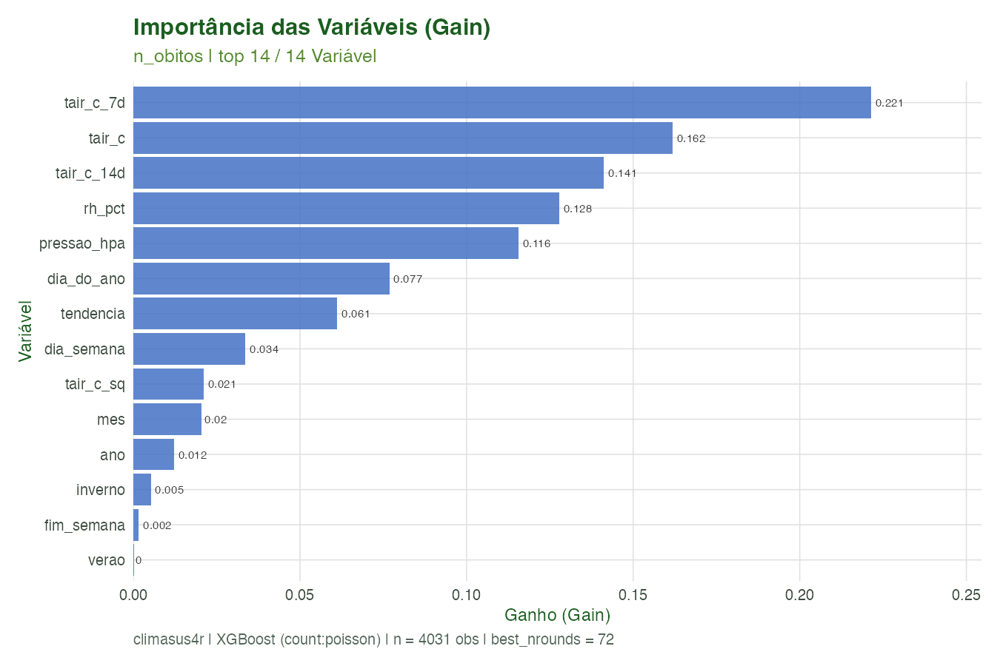
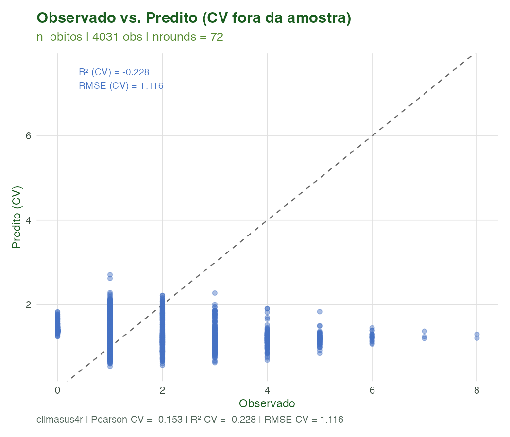
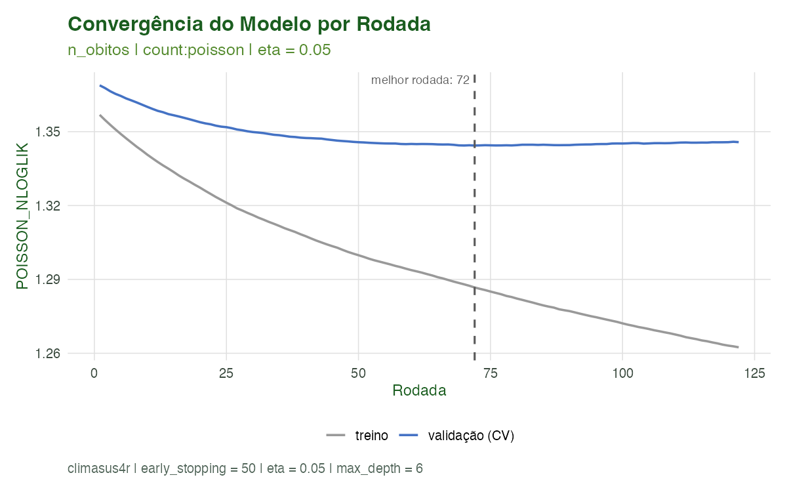
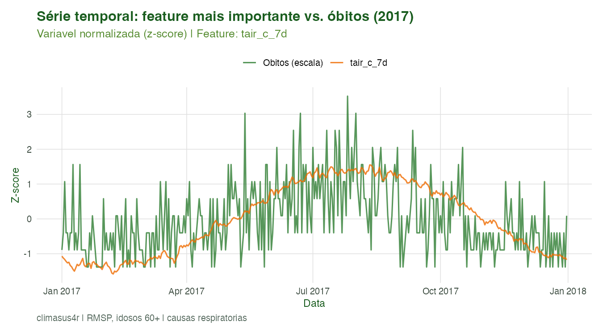
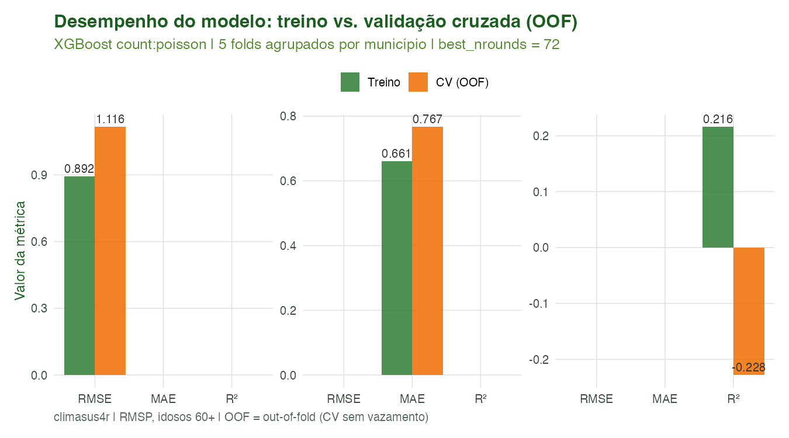

Modelagem 05: Machine Learning (Gradient Boosting / XGBoost)
Equipe climasus4r
14/06/2026
Source:vignettes/mod-05-ml.Rmd
mod-05-ml.RmdObjetivo
Ao final deste tutorial você será capaz de treinar um modelo
de Machine Learning baseado em Gradient Boosting (XGBoost) para
prever contagens diárias de desfechos de saúde a partir de features
climáticas, de calendário e socioespaciais — usando
sus_mod_ml() —, e de visualizar os
resultados (importância de variáveis, ajuste CV, curva de
convergência) com sus_mod_plot_ml().
O sus_mod_ml() complementa, sem
substituir, a família DLNM/meta-análise do climasus4r: o
DLNM estima a relação causal não-linear e defasada
entre temperatura e saúde; o XGBoost foca na acurácia
preditiva em um espaço de features mais amplo, simultâneo
(clima + calendário + socioeconômico) e sem suposições paramétricas
sobre a forma funcional.
Contexto científico
Gradient Boosting para dados de contagem em saúde
O Gradient Boosting (Friedman, 2001) é uma técnica de aprendizado de máquina que constrói modelos aditivos de forma iterativa: cada árvore de decisão nova corrige os erros das anteriores, minimizando uma função de perda. O XGBoost (Chen & Guestrin, 2016) é a implementação regularizada mais utilizada na prática, com paralelismo eficiente e controle de overfitting por regularização L1/L2 e subsampling.
Para desfechos de contagem (óbitos, internações,
casos), o objetivo "count:poisson" minimiza a
deviância de Poisson, equivalente a um modelo
log-linear:
onde é a predição do ensemble de árvores e é a -ésima árvore com pesos regularizados. A predição final está na escala de contagens (lambda de Poisson).
O número ótimo de árvores
()
é determinado por validação cruzada com early stopping:
o treinamento para quando a métrica de validação não melhora por
early_stopping rodadas consecutivas, prevenindo
overfitting. Seja
a métrica no fold de validação na rodada
:
Validação cruzada agrupada por município
Dados de saúde ambiental têm estrutura de painel
(municípios
dias). Se as observações de um mesmo município aparecerem tanto no
treino quanto na validação, o modelo aprende o efeito fixo do município
— e a métrica de CV superestima a capacidade de generalização para
novos municípios. O sus_mod_ml() resolve
isso com validação cruzada agrupada
(id_col): cada grupo (município) fica inteiramente em um
único fold, garantindo que o modelo seja validado em municípios que não
viu durante o treino. O resultado são previsões fora da
amostra (OOF — Out-of-Fold) verdadeiramente generalizáveis.
Importância de variáveis: Gain
O XGBoost calcula três métricas de importância por feature:
| Métrica | Interpretação |
|---|---|
| Gain | Redução média da perda por divisão que usa esta variável. Principal métrica de relevância preditiva. |
| Cover | Número médio de observações afetadas por divisões desta variável. Indica abrangência. |
| Frequency | Proporção de todas as divisões que usam esta variável. Indica frequência de uso. |
Caso condutor. Investigamos a temperatura e os desfechos de saúde em idosos (60+) na Região Metropolitana de São Paulo, 2014–2019 (respiratórias J00–J99). Neste tutorial treinamos um XGBoost para prever a contagem diária de óbitos a partir de features climáticas (temperatura média, umidade, pressão) e de calendário (dia da semana, mês, tendência). A validação cruzada é agrupada por município para evitar vazamento de informação entre treino e validação.
Dados utilizados
| Entrada | Arquivo | Papel |
|---|---|---|
| Série diária de saúde | dados/caso_serie.rds |
Desfecho (n_obitos) e identificador de município |
| Dados climáticos (estação INMET) | dados/caso_clima_estacao.rds |
Features climáticas (tair_c, rh_pct,
pressao_hpa) por município e dia |
| Dados socioeconômicos | dados/caso_socio.rds |
Features adicionais (IDHM, Gini) por município |
Se qualquer arquivo de entrada estiver ausente, o script gera automaticamente uma série sintética mínima realista (12 municípios, 6 anos, sinal temperatura–saúde em curva-V) com aviso explícito, para que o pipeline complete mesmo sem a cadeia completa.
Features construídas pelo script:
| Feature | Tipo | Descrição |
|---|---|---|
tair_c |
Climática | Temperatura média do ar (°C) |
rh_pct |
Climática | Umidade relativa (%) |
pressao_hpa |
Climática | Pressão atmosférica (hPa) |
tair_c_sq |
Climática (derivada) | Temperatura ao quadrado (efeito não-linear) |
tair_c_7d |
Climática (lag) | Média móvel de 7 dias da temperatura |
tair_c_14d |
Climática (lag) | Média móvel de 14 dias da temperatura |
dia_do_ano |
Calendário | Dia juliano (1–365) |
dia_semana |
Calendário | Dia da semana (1=seg, 7=dom) |
mes |
Calendário | Mês (1–12) |
ano |
Calendário | Ano (2014–2019) |
tendencia |
Calendário | Dias desde o início do período |
inverno |
Binário sazonal | 1 se junho–agosto, 0 caso contrário |
verao |
Binário sazonal | 1 se dezembro–fevereiro, 0 caso contrário |
fim_semana |
Binário | 1 se sábado ou domingo |
Pipeline completo
Os blocos abaixo reproduzem o que o script
scripts/modelagem_05_ml.R executa. Comece carregando o
pacote:
library(climasus4r)Carregar os dados de entrada
Os arquivos são lidos com guarda file.exists(),
garantindo que o pipeline complete mesmo sem a cadeia anterior. Os
caminhos são relativos à raiz do pacote (pois o script
roda de lá via Rscript scripts/modelagem_05_ml.R).
# Caminhos relativos à raiz do pacote (como o script roda)
path_serie <- file.path("vignettes-pt", "dados", "caso_serie.rds")
path_clima <- file.path("vignettes-pt", "dados", "caso_clima_estacao.rds")
path_socio <- file.path("vignettes-pt", "dados", "caso_socio.rds")
caso_serie <- if (file.exists(path_serie)) readRDS(path_serie) else NULL
caso_clima <- if (file.exists(path_clima)) readRDS(path_clima) else NULL
caso_socio <- if (file.exists(path_socio)) readRDS(path_socio) else NULL
# Se caso_serie ou caso_clima ausentes, o script gera dados sintéticos
# realistas (12 municípios × 6 anos) com sinal temperatura-saúde em curva-V.Preparar o data.frame de features
O sus_mod_ml() aceita qualquer data.frame
(incluindo climasus_df). Aqui construímos as features
climáticas e de calendário, e opcionalmente vinculamos features
socioeconômicas por município.
# Engenharia de features de calendário
df_model <- caso_serie |>
dplyr::mutate(
dia_do_ano = as.integer(format(date, "%j")),
dia_semana = as.integer(format(date, "%u")),
mes = as.integer(format(date, "%m")),
ano = as.integer(format(date, "%Y")),
tendencia = as.integer(date - min(date)),
inverno = as.integer(mes %in% 6:8),
verao = as.integer(mes %in% c(12, 1, 2)), # 12:2 geraria 12,11,...,2
fim_semana = as.integer(dia_semana >= 6),
tair_c_sq = tair_c^2,
tair_c_7d = as.numeric(stats::filter(tair_c, rep(1/7, 7), sides = 1)),
tair_c_14d = as.numeric(stats::filter(tair_c, rep(1/14, 14), sides = 1))
) |>
dplyr::filter(!is.na(tair_c_14d)) |>
dplyr::select(-date) # remove coluna Date (não numérica)
# Opcional: vincular features socioeconômicas
if (!is.null(caso_socio)) {
df_model <- dplyr::left_join(df_model, caso_socio,
by = "municipio",
relationship = "many-to-one")
}Ajustar o modelo XGBoost com sus_mod_ml()
ml_fit <- sus_mod_ml(
df = df_model,
outcome_col = "n_obitos",
feature_cols = NULL, # auto: todas as numéricas exceto outcome e id
id_col = "municipio", # CV agrupada por município (evita vazamento)
objective = "count:poisson",
nrounds = 500L,
max_depth = 6L,
eta = 0.05,
subsample = 0.8,
colsample_bytree = 0.8,
min_child_weight = 1,
nfold = 5L,
early_stopping = 50L,
seed = 42L,
lang = "pt",
verbose = TRUE
)
# Inspecionar o objeto retornado
print(ml_fit) # resumo de performance e top features
tidy(ml_fit) # tibble de predições (observed / fitted / cv_predicted / residual)Previsão em novos dados com predict()
O método predict.climasus_ml() aplica o modelo treinado
a um data.frame novo. As colunas devem ser as mesmas do
treino (ml_fit$meta$feature_cols).
# Cenário: onda de calor (tair_c = 34 °C) num dia de semana de janeiro
novo_dado <- data.frame(
tair_c = 34, tair_c_sq = 34^2,
tair_c_7d = 32, tair_c_14d = 30,
rh_pct = 45, pressao_hpa = 918,
dia_do_ano = 15, dia_semana = 2,
mes = 1, ano = 2019,
tendencia = 1840, inverno = 0,
verao = 1, fim_semana = 0
)
obitos_previstos <- predict(ml_fit, newdata = novo_dado)
cat("Óbitos previstos (onda de calor):", round(obitos_previstos, 1), "\n")Visualizações com sus_mod_plot_ml()
# Importância das variáveis (Gain) — top 15
sus_mod_plot_ml(
x = ml_fit,
type = "importance",
output_type = "plot",
n_top = 15L,
lang = "pt"
)
# Observado vs. predito CV (out-of-fold) — diagnóstico de ajuste
sus_mod_plot_ml(
x = ml_fit,
type = "fit",
output_type = "plot",
lang = "pt"
)
# Curva de aprendizado: métrica de treinamento e de validação por rodada
sus_mod_plot_ml(
x = ml_fit,
type = "cv_log",
output_type = "plot",
lang = "pt"
)
# output_type = "all" retorna lista com $plot, $table e $data
out_imp <- sus_mod_plot_ml(ml_fit, type = "importance", output_type = "all")
out_imp$table # tibble: Feature, Gain, Cover, FrequencyCaracterísticas das funções
sus_mod_ml() — Ajuste do modelo XGBoost
Treina um modelo XGBoost de Gradient Boosting para prever um desfecho de saúde (contagem, taxa ou binário) a partir de features numéricas. Incorpora validação cruzada agrupada com early stopping para determinar o número ótimo de árvores e retorna predições out-of-fold para diagnóstico imparcial.
Argumentos principais:
| Argumento | Padrão | Descrição |
|---|---|---|
df |
— |
data.frame ou climasus_df com outcome e
features |
outcome_col |
— | Nome da coluna-alvo (deve ser numérica) |
feature_cols |
NULL |
Colunas preditoras; NULL = todas as numéricas exceto
outcome e id |
id_col |
NULL |
Coluna de agrupamento para CV sem vazamento entre grupos (ex.: município) |
objective |
"count:poisson" |
Função de perda: "count:poisson",
"reg:squarederror", "binary:logistic"
|
nrounds |
500L |
Número máximo de árvores (rodadas de boosting) |
max_depth |
6L |
Profundidade máxima das árvores |
eta |
0.05 |
Taxa de aprendizado (shrinkage); menor = mais conservador, requer mais rounds |
subsample |
0.8 |
Fração de linhas amostradas por árvore (regularização) |
colsample_bytree |
0.8 |
Fração de colunas amostradas por árvore |
min_child_weight |
1 |
Peso mínimo por folha; aumentar previne overfitting em padrões raros |
nfold |
5L |
Número de folds de CV |
early_stopping |
50L |
Parar se a métrica CV não melhorar por N rodadas consecutivas |
seed |
42L |
Semente aleatória para reprodutibilidade |
lang |
"pt" |
Idioma das mensagens: "pt", "en",
"es"
|
Retorno — objeto climasus_ml (lista
nomeada):
| Componente | Conteúdo |
|---|---|
$predictions |
Tibble: observed, fitted,
cv_predicted, residual, (e id_col
se fornecido) |
$importance |
Tibble ordenado por Gain: Feature,
Gain, Cover, Frequency
|
$performance |
Lista: RMSE_train, MAE_train,
R2_train, RMSE_cv, MAE_cv,
R2_cv, Pearson_cv,
best_nrounds
|
$model |
Objeto xgb.Booster final treinado no conjunto completo
com best_nrounds
|
$cv_log |
data.frame do xgb.cv() com métrica por
rodada (treino e validação) |
$meta |
Lista com todos os parâmetros da chamada (rastreabilidade) |
Métodos S3 disponíveis: print(),
summary(), tidy() (predições),
predict() (novos dados).
Dependência: requer o pacote xgboost
(Suggests). Se ausente, a função lança erro informativo com instrução de
instalação.
sus_mod_plot_ml() — Visualizações do modelo ML
Produz três tipos de gráfico diagnóstico a partir de um objeto
climasus_ml.
Argumentos:
| Argumento | Padrão | Descrição |
|---|---|---|
x |
— | Objeto climasus_ml de sus_mod_ml()
|
type |
"importance" |
Tipo de gráfico: ver tabela abaixo |
output_type |
"plot" |
"plot" → ggplot2; "table" → tibble;
"all" → lista $plot/$table/$data
|
n_top |
20L |
Número máximo de features no gráfico de importância |
interactive |
FALSE |
TRUE converte para widget plotly
interativo |
base_size |
12 |
Tamanho base da fonte ggplot2 |
save_plot |
NULL |
Caminho para salvar o gráfico (PNG/HTML) |
lang |
"pt" |
Idioma dos rótulos: "pt", "en",
"es"
|
Tipos de gráfico (type):
type |
O que mostra | Componente de $ usado |
|---|---|---|
"importance" |
Barras horizontais por feature, ordenadas por Gain (maior = mais preditivo) | $importance |
"fit" |
Dispersão observado × predito CV (OOF), com linha de identidade e anotações de R² e RMSE | $predictions |
"cv_log" |
Curva de métrica de treinamento e de validação cruzada por rodada, com marcador na melhor rodada | $cv_log |
"prediction" |
Série temporal dos valores preditos (OOF) sobrepostos aos observados ao longo do tempo | $predictions |
"residuals" |
Distribuição e padrão temporal dos resíduos (observado − predito); detecta heteroscedasticidade e padrões sazonais remanescentes | $predictions |
Retorno: ggplot (padrão), tibble dos
dados plotados (output_type = "table"), ou lista nomeada
com os dois (output_type = "all").
Fórmulas e fundamentos matemáticos
Objetivo XGBoost count:poisson
O ensemble de árvores é ajustado minimizando a deviância de Poisson regularizada:
onde e penaliza complexidade ( = número de folhas, = pesos).
Resultados ilustrados

Figura 1. Importância das variáveis (Gain) — top 15
features. O Gain mede a redução média da perda de Poisson por divisão
que utiliza cada variável. Features de temperatura (incluindo médias
móveis e transformações não-lineares) e de calendário (sazonalidade,
tendência) costumam liderar. O gráfico é produzido por
sus_mod_plot_ml(type = "importance").

Figura 2. Observado versus predito fora da amostra
(CV out-of-fold). Cada ponto é um dia × município; a linha tracejada é a
identidade perfeita (predito = observado). As anotações de R² e RMSE são
calculadas sobre as predições OOF — imparciais, pois cada observação foi
predita por um modelo que não a usou no treino. Produzido por
sus_mod_plot_ml(type = "fit").

Figura 3. Curva de convergência da validação
cruzada. A linha de treino (cinza) decresce monotonamente; a linha de
validação (azul) atinge o mínimo na melhor rodada (linha vertical
tracejada), após o qual o early stopping interrompe o treinamento. A
diferença entre as curvas quantifica o overfitting. Produzido por
sus_mod_plot_ml(type = "cv_log").

Figura 4. Série temporal da feature mais importante e dos óbitos diários (ambos padronizados em z-score) para o ano de 2017. A covariação visual ilustra por que a variável climática lidera a importância preditiva: quando a temperatura cai (inverno paulistano), os óbitos respiratórios sobem.

Figura 5. Comparação das métricas de desempenho entre o conjunto de treino (in-sample) e a validação cruzada OOF. A diferença entre treino e CV indica a magnitude do overfitting; quanto menor a diferença, melhor a capacidade de generalização do modelo.
Tabelas de resultados
| Conjunto | RMSE | MAE | R2 | Pearson |
|---|---|---|---|---|
| Treino (in-sample) | 0.892 | 0.661 | 0.216 | NA |
| Validação CV (OOF) | 1.116 | 0.767 | -0.228 | -0.153 |
| Feature | Gain | Cover | Frequency |
|---|---|---|---|
| tair_c_7d | 0.2213517 | 0.1864337 | 0.1133807 |
| tair_c | 0.1617924 | 0.1266342 | 0.1956779 |
| tair_c_14d | 0.1412539 | 0.1606004 | 0.0902901 |
| rh_pct | 0.1277451 | 0.1407017 | 0.1687389 |
| pressao_hpa | 0.1155900 | 0.1338112 | 0.1394316 |
| dia_do_ano | 0.0768173 | 0.1023575 | 0.0982830 |
| tendencia | 0.0611878 | 0.0730826 | 0.0799290 |
| dia_semana | 0.0336349 | 0.0156214 | 0.0497336 |
| tair_c_sq | 0.0210384 | 0.0208534 | 0.0254589 |
| mes | 0.0203526 | 0.0282216 | 0.0162818 |
| ano | 0.0121587 | 0.0035040 | 0.0180580 |
| inverno | 0.0052419 | 0.0071136 | 0.0017762 |
| fim_semana | 0.0015616 | 0.0002151 | 0.0020722 |
| verao | 0.0002735 | 0.0008497 | 0.0008881 |
Boas práticas e limitações
O que o XGBoost captura bem:
- Relações não-lineares complexas entre features e desfecho (sem necessidade de especificar a forma funcional)
- Interações de alta ordem (ex.: efeito do calor amplificado em fim de semana)
- Grande número de features simultâneas sem seleção prévia manual
O que o XGBoost não faz (diferença crítica em relação ao DLNM):
-
Não modela defasagem distribuída: o efeito da
temperatura do dia
deve ser incluído como feature explícita (ex.:
tair_c_7d,tair_c_14d). O DLNM modelao lag de forma contínua. - Não fornece intervalos de confiança para as predições individuais por padrão. Para quantificar incerteza, use simulação bootstrap ou conformal prediction.
-
Não é interpretável como risco relativo
diretamente: os valores preditos são contagens (lambda de Poisson), não
RRs. Para estimativas causais de RR, use
sus_mod_dlnm().
Vazamento de dados temporal: em séries temporais,
uma validação cruzada aleatória pode violar a ordem temporal (treinar
com o futuro para prever o passado). Para estudos com dependência
temporal forte, considere CV por blocos temporais (time-series split). O
id_col do sus_mod_ml() controla o vazamento
espacial (por município), não o temporal.
Referências
- Chen, T., & Guestrin, C. (2016). XGBoost: A Scalable Tree Boosting System. Proceedings of the 22nd ACM SIGKDD International Conference on Knowledge Discovery and Data Mining, 785–794. https://doi.org/10.1145/2939672.2939785
- Friedman, J. H. (2001). Greedy function approximation: A gradient boosting machine. Annals of Statistics, 29(5), 1189–1232.
- Hastie, T., Tibshirani, R., & Friedman, J. (2009). The Elements of Statistical Learning (2nd ed.). Springer. Cap. 10 (Boosting and Additive Trees).
- Gasparrini, A., Armstrong, B., & Kenward, M. G. (2010). Distributed lag non-linear models. Statistics in Medicine, 29(21), 2224–2234.
- Bhaskaran, K., Gasparrini, A., Hajat, S., Smeeth, L., & Armstrong, B. (2013). Time series regression studies in environmental epidemiology. International Journal of Epidemiology, 42(4), 1187–1195.
- Ministério da Saúde (Brasil). DATASUS — Departamento de Informática do SUS. Disponível em: http://datasus.saude.gov.br.
Navegação
- Voltar ao hub de tutoriais
- Anterior: Modelagem 04 — Meta-análise Multi-cidade
- Próximo: Modelagem 06 — Análise Espacial
Como reproduzir as figuras. Rode uma única vez, a partir da raiz do pacote:
Rscript scripts/modelagem_05_ml.RO script salva as figuras em
vignettes-pt/figuras/(prefixomodml_), as tabelas emvignettes-pt/dados/e o objeto ajustado (mod_ml_fit.rds) que tutoriais subsequentes podem reutilizar. O pacotexgboostdeve estar instalado:install.packages("xgboost")